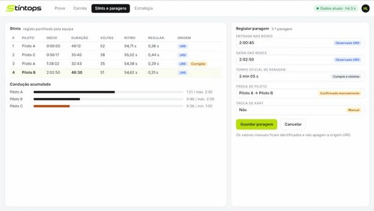
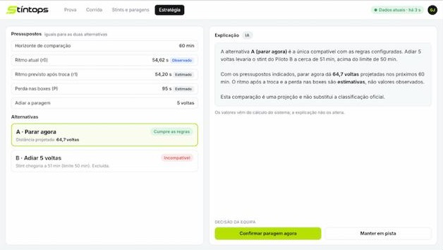
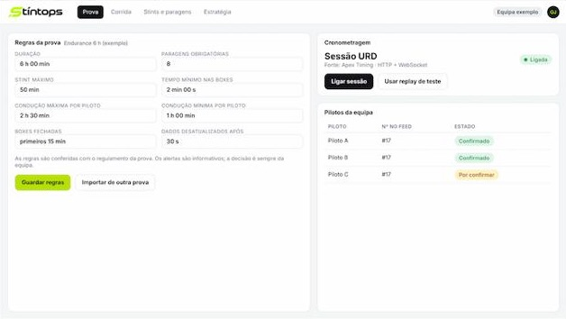

Arrancou o desenvolvimento do protótipo
Depois da fase de planeamento, a equipa começou a construir o primeiro fluxo completo: dados da corrida, stints e paragens.
Ler maisEstratégia e gestão para kart endurance
Tempos numa plataforma, pilotos num grupo de mensagens, paragens num caderno. O StintOps junta a cronometragem e os registos da equipa e compara alternativas de paragem com os pressupostos à vista. A decisão continua a ser vossa.
O problema
Seis horas de corrida, vários pilotos, regras de stint e paragens obrigatórias. E a informação de que a equipa precisa para decidir está espalhada.
Os tempos estão na plataforma de cronometragem. Quem conduz, quando trocou e quanto demorou a paragem fica em notas soltas.
Quando é preciso decidir a próxima paragem, não há tempo para cruzar números à mão nem para comparar alternativas com calma.
Tempo máximo por stint, número de paragens obrigatórias, tempo mínimo de condução. Um erro de contas pode custar uma penalização.
O produto
O StintOps é uma aplicação web de apoio à decisão. Organiza a corrida em tempo real e mostra à equipa o que está a acontecer e o que pode fazer a seguir.
Recebe os tempos da sessão em direto através de um serviço de dados normalizados. Quando faltam dados, a equipa completa-os à mão, sem perder a origem de cada registo.
Quem está em pista, há quanto tempo e quando foi a última troca. Toda a equipa vê a mesma informação, atualizada por quem está nas boxes.
Média e variação das voltas válidas de cada piloto, com as voltas afetadas por paragens e incidentes identificadas e postas de parte.
Compara alternativas de paragem, verifica-as contra as regras da prova e explica cada resultado com apoio de IA: que pressupostos usou e que dados faltam.


Como funciona
Indica os pilotos, as regras do regulamento (paragens obrigatórias, limites de stint) e liga a sessão de cronometragem.
Durante a corrida, quem está nas boxes regista trocas e paragens. Todos veem o mesmo estado, com alertas quando um limite se aproxima.
O StintOps calcula alternativas para a próxima paragem e explica as diferenças. A equipa escolhe, com os números à frente.
Sobre nós
O StintOps nasceu no Iscte, pela mão de uma equipa de estudantes de engenharia com ligação direta ao karting de endurance. Vimos de perto como as decisões de boxes ainda se tomam com papel e intuição, e decidimos construir a ferramenta que nos faltava.
Dar a qualquer equipa de endurance informação clara e partilhada para decidir melhor durante a corrida.
Sugerimos e explicamos; nunca aplicamos uma estratégia sem uma escolha vossa.
Cada número mostra de onde vem, que dados usou e o que ficou de fora.
Se os dados estão desatualizados ou incompletos, dizemos. Melhor um aviso do que uma falsa certeza.
Testamos com equipas e pilotos reais e mudamos o produto com base no que nos dizem.
Testemunhos
Estamos a testar o StintOps com as primeiras equipas. Os testemunhos aparecem aqui à medida que os testes avançam.
Espaço reservado ao testemunho do chefe de equipa da primeira equipa parceira.
Espaço reservado ao testemunho de um piloto que tenha usado o StintOps em prova.
A tua equipa pode ser a próxima. Adere ao programa piloto e ajuda-nos a construir o StintOps.
Notícias
Depois da fase de planeamento, a equipa começou a construir o primeiro fluxo completo: dados da corrida, stints e paragens.
Ler mais
Fechámos o plano do projeto e decidimos que o protótipo vai receber os tempos em direto, com registo manual para completar o que faltar.
Ler maisArranque oficial do projeto no Iscte, com o objetivo de levar a gestão de estratégia às equipas de kart endurance.
Ler maisPrograma piloto
Procuramos equipas que queiram usar o protótipo em corrida e dizer-nos o que funciona e o que falta.
Um email por mês, no máximo, com o progresso do produto.